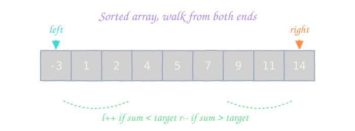
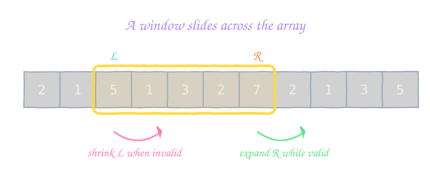
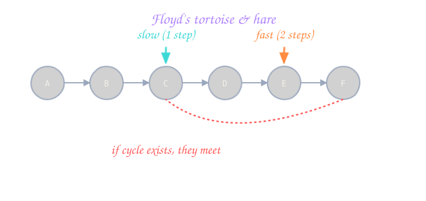

01 The 5-step framework How to attack ANY problem you've never seen before. ▾
Why this matters more than memorising algorithms
Every interviewer has seen 500 candidates jump straight into for (int i=0; i<n; i++). The ones who get offers do something visibly different: they slow down, ask, think out loud, and only type when they know what they're typing. This is the thinking out loud tax — it costs you 30 seconds and earns you the rest of the interview.
- Understand. Repeat the problem in your own words. Confirm input type, output type, and any constraints (size of
n, value range, can the array be empty, are values unique, sorted, signed). If anything is unclear, ask before guessing. - Examples. Walk through the given example by hand. Then invent 2 more: a normal case and an edge case (empty, single element, duplicates, all same, negative, overflow). This step alone catches half of all bugs.
- Brute force. State the dumbest correct solution out loud. "I could check every pair, that's
O(n²)." Even if you never code it, the interviewer now knows you understood the problem. - Optimise. Look at the brute force's repeated work. Can a hash map remember it? Can sorting reveal structure? Can a pointer trick avoid a loop? This is the insight step — the moment you go from O(n²) to O(n log n) or O(n).
- Code, then test. Now type. Keep variable names long enough to read. After the last brace, run the example in your head line by line. Then try one edge case you invented in step 2.
The framework on a real problem: "Two Sum"
Given nums = [2, 7, 11, 15], target = 9, return the indices of the two numbers that add to the target.
- Understand: "Find two indices i, j with
nums[i] + nums[j] == target. Indices, not values. Exactly one solution exists. Each input used once." - Examples:
[2,7,11,15], 9 → [0,1]. Edge:[3,3], 6 → [0,1](duplicates). - Brute force: "Two nested loops, check every pair. O(n²) time, O(1) space."
- Optimise: "For each
x, I needtarget - x. A hash map gives me O(1) lookup of what I've already seen. One pass, O(n) time, O(n) space." - Code, then test:
vector<int> twoSum(vector<int>& nums, int target) {
unordered_map<int,int> seen; // value -> index
for (int i = 0; i < (int)nums.size(); ++i) {
int need = target - nums[i];
auto it = seen.find(need);
if (it != seen.end()) return {it->second, i};
seen[nums[i]] = i;
}
return {};
}int[] twoSum(int[] nums, int target) {
Map<Integer, Integer> seen = new HashMap<>();
for (int i = 0; i < nums.length; i++) {
int need = target - nums[i];
if (seen.containsKey(need)) return new int[]{ seen.get(need), i };
seen.put(nums[i], i);
}
return new int[0];
}def two_sum(nums, target):
seen = {} # value -> index
for i, x in enumerate(nums):
need = target - x
if need in seen:
return [seen[need], i]
seen[x] = i
return [][3,3], 6, you'd return [0,0]. Always check, then insert.02 Big-O in plain English The language of "how fast is this?" ▾
n is huge.
The complexity ladder (memorise this order)
| Complexity | Vibes | Typical algorithm | n = 106 |
|---|---|---|---|
O(1) | instant | hash lookup, array index | ~ns |
O(log n) | excellent | binary search, balanced BST op | ~20 steps |
O(n) | linear | one pass over data | ~1M steps |
O(n log n) | very good | sort, heap-based | ~20M steps |
O(n²) | ok for n < 104 | two nested loops, naive DP | TLE |
O(n³) | avoid | three nested loops | ~1018 |
O(2ˆn) | brute subsets | backtracking subsets | won't finish |
O(n!) | brute permute | brute travelling salesman | won't finish |
How to derive complexity in 30 seconds
- Find every loop. A single loop over
nis O(n). Nested loops multiply: 2 nested loops overn= O(n²). - Recursive calls: count the tree. If each call spawns 2 sub-calls and depth is
n, you have O(2ˆn). - Drop constants and lower-order terms:
5n + 100is just O(n).n² + nis O(n²). - Space = the largest auxiliary data you keep (extra arrays, recursion stack, hash map size). The output usually doesn't count.
The 108 rule
Competitive-programming heuristic: a modern judge does ~108 simple operations per second. Multiply your Big-O by the input size in the worst case — if the answer is bigger than ~108, you'll TLE.
Practical translation
n ≤ 10: O(n!), O(2ˆn) ok.
n ≤ 20: O(2ˆn) ok (with memo).
n ≤ 5000: O(n²) ok.
n ≤ 105: O(n log n).
n ≤ 107: O(n).
n ≤ 109: O(log n) or math.
Beginner traps
Hidden loops: substring(), list.contains(), string += in a loop — each costs O(n).
Sorting inside a loop = O(n² log n). Sort once, outside.
Recursion stack = O(depth) space — don't forget.
Amortised ≠ worst: a single ArrayList.add can be O(n); average is O(1).
03 Data-structure cheat sheet Reach for the right tool in 5 seconds. ▾
| Structure | Reach for it when… | Access | Search | Insert | Delete |
|---|---|---|---|---|---|
| Array / Vector | random index access; fixed size known | O(1) | O(n) | O(n) | O(n) |
| Dynamic Array | unknown size; append-heavy | O(1) | O(n) | O(1)* | O(n) |
| Linked List | frequent insert/delete in middle when you have the node | O(n) | O(n) | O(1) | O(1) |
| Stack | "undo", parentheses, monotonic, DFS | — | — | O(1) | O(1) |
| Queue / Deque | BFS, sliding window max/min | — | — | O(1) | O(1) |
| HashMap / HashSet | "have I seen this?" counting, dedup | O(1) | O(1) | O(1) | O(1) |
| TreeMap / TreeSet | need sorted order or floor/ceiling queries | O(log n) | O(log n) | O(log n) | O(log n) |
| Heap (priority queue) | top-K, "best so far", Dijkstra | O(1) peek | O(n) | O(log n) | O(log n) pop |
| Trie | prefix queries, autocomplete, word search | O(L) | O(L) | O(L) | O(L) |
| Union-Find / DSU | "are these connected?", Kruskal MST | — | ~O(α) | ~O(α) | — |
| Graph (adj-list) | nodes + edges | — | — | O(1) | O(deg) |
*amortised across resizes. L = length of the word/key. α = inverse Ackermann, essentially constant.
Quick-recognition phrases
- "How many distinct?" / "Have I seen this?" →
HashSet. - "Frequency of each X" →
HashMap<X, int>orCounter. - "Top K" / "K largest/smallest" → min-heap of size K.
- "Next greater element" / "matching brackets" / "histogram" → monotonic stack.
- "Shortest path on a grid/graph with weight 1" → BFS.
- "All paths / combinations / subsets" → backtracking.
- "Optimal & overlapping subproblems" → DP.
- "Are nodes in the same group?" / "merge components" → Union-Find.
- "Prefix match on strings" → Trie.
- "Sorted + need to add/remove fast" →
TreeSet/ SortedList.
ArrayDeque beats Stack and LinkedList for both stack and queue use. In Python, use collections.deque. In C++, use std::stack / std::queue / std::deque — never std::list for these.04 Pattern: Two Pointers Walk a sorted array from both ends and skip the dumb work. ▾

Template
int l = 0, r = (int)a.size() - 1;
while (l < r) {
int s = a[l] + a[r];
if (s == target) return {l, r};
else if (s < target) l++; // need a bigger sum
else r--; // need a smaller sum
}int l = 0, r = a.length - 1;
while (l < r) {
int s = a[l] + a[r];
if (s == target) return new int[]{ l, r };
else if (s < target) l++;
else r--;
}l, r = 0, len(a) - 1
while l < r:
s = a[l] + a[r]
if s == target: return [l, r]
elif s < target: l += 1
else: r -= 1Worked example - 3Sum (LC 15)
Given nums, find all unique triplets (a, b, c) such that a + b + c == 0. Sort the array, fix nums[i], then two-pointer the rest.
vector<vector<int>> threeSum(vector<int>& nums) {
sort(nums.begin(), nums.end());
vector<vector<int>> out;
int n = nums.size();
for (int i = 0; i < n - 2; ++i) {
if (i > 0 && nums[i] == nums[i-1]) continue; // skip dup pivot
int l = i + 1, r = n - 1;
while (l < r) {
int s = nums[i] + nums[l] + nums[r];
if (s == 0) {
out.push_back({nums[i], nums[l], nums[r]});
while (l < r && nums[l] == nums[l+1]) l++; // skip dup left
while (l < r && nums[r] == nums[r-1]) r--; // skip dup right
l++; r--;
} else if (s < 0) l++;
else r--;
}
}
return out;
}List<List<Integer>> threeSum(int[] nums) {
Arrays.sort(nums);
List<List<Integer>> out = new ArrayList<>();
int n = nums.length;
for (int i = 0; i < n - 2; i++) {
if (i > 0 && nums[i] == nums[i-1]) continue;
int l = i + 1, r = n - 1;
while (l < r) {
int s = nums[i] + nums[l] + nums[r];
if (s == 0) {
out.add(Arrays.asList(nums[i], nums[l], nums[r]));
while (l < r && nums[l] == nums[l+1]) l++;
while (l < r && nums[r] == nums[r-1]) r--;
l++; r--;
} else if (s < 0) l++;
else r--;
}
}
return out;
}def three_sum(nums):
nums.sort()
out, n = [], len(nums)
for i in range(n - 2):
if i > 0 and nums[i] == nums[i-1]:
continue # skip dup pivot
l, r = i + 1, n - 1
while l < r:
s = nums[i] + nums[l] + nums[r]
if s == 0:
out.append([nums[i], nums[l], nums[r]])
while l < r and nums[l] == nums[l+1]: l += 1
while l < r and nums[r] == nums[r-1]: r -= 1
l += 1; r -= 1
elif s < 0: l += 1
else: r -= 1
return out- Forgetting to skip duplicates → output has repeats.
- Using a hash set "for safety" instead of skipping → O(n) extra space, slower constants.
- Two-pointer on an unsorted array — the technique relies on the monotonic relationship.
Practice
05 Pattern: Sliding Window A window grows and shrinks across the array — never rewinds. ▾
[L, R]. Expand R, contract L when the window violates a constraint. Each index enters and leaves the window at most once → O(n).
Template - variable window (most common)
int best = 0, L = 0;
unordered_map<char,int> cnt;
for (int R = 0; R < (int)s.size(); ++R) {
cnt[s[R]]++;
while (/* window invalid, e.g. cnt.size() > K */) {
if (--cnt[s[L]] == 0) cnt.erase(s[L]);
L++;
}
best = max(best, R - L + 1);
}int best = 0, L = 0;
Map<Character, Integer> cnt = new HashMap<>();
for (int R = 0; R < s.length(); R++) {
cnt.merge(s.charAt(R), 1, Integer::sum);
while (/* invalid */ ) {
char c = s.charAt(L++);
if (cnt.merge(c, -1, Integer::sum) == 0) cnt.remove(c);
}
best = Math.max(best, R - L + 1);
}from collections import defaultdict
cnt = defaultdict(int)
best = L = 0
for R, ch in enumerate(s):
cnt[ch] += 1
while invalid(cnt):
cnt[s[L]] -= 1
if cnt[s[L]] == 0:
del cnt[s[L]]
L += 1
best = max(best, R - L + 1)Worked example - Longest Substring Without Repeating Characters (LC 3)
int lengthOfLongestSubstring(string s) {
unordered_map<char,int> last; // char -> last index seen
int L = 0, best = 0;
for (int R = 0; R < (int)s.size(); ++R) {
if (last.count(s[R]) && last[s[R]] >= L) {
L = last[s[R]] + 1; // jump past the previous occurrence
}
last[s[R]] = R;
best = max(best, R - L + 1);
}
return best;
}int lengthOfLongestSubstring(String s) {
Map<Character, Integer> last = new HashMap<>();
int L = 0, best = 0;
for (int R = 0; R < s.length(); R++) {
char c = s.charAt(R);
if (last.containsKey(c) && last.get(c) >= L) {
L = last.get(c) + 1;
}
last.put(c, R);
best = Math.max(best, R - L + 1);
}
return best;
}def length_of_longest_substring(s):
last, L, best = {}, 0, 0
for R, ch in enumerate(s):
if ch in last and last[ch] >= L:
L = last[ch] + 1 # jump past previous occurrence
last[ch] = R
best = max(best, R - L + 1)
return best- Re-iterating to recompute window sum → you wrecked the O(n).
- Forgetting to shrink the window when it becomes invalid (infinite loop or wrong answer).
- Fixed-window problems: forgetting to drop the element falling out of the left.
Practice
06 Pattern: Fast & Slow Pointers Two pointers, different speeds — expose cycles and midpoints. ▾

Template - cycle detection
bool hasCycle(ListNode* head) {
ListNode *slow = head, *fast = head;
while (fast && fast->next) {
slow = slow->next;
fast = fast->next->next;
if (slow == fast) return true;
}
return false;
}boolean hasCycle(ListNode head) {
ListNode slow = head, fast = head;
while (fast != null && fast.next != null) {
slow = slow.next;
fast = fast.next.next;
if (slow == fast) return true;
}
return false;
}def has_cycle(head):
slow = fast = head
while fast and fast.next:
slow = slow.next
fast = fast.next.next
if slow is fast:
return True
return FalseWhy the math works (LC 142 - find the cycle start)
Let L = distance from head to cycle start, C = cycle length, k = distance from cycle start to the meet point. When they meet: slow walked L + k, fast walked 2(L + k) = L + k + n·C. So L = n·C - k. Reset slow to head; move both one step at a time. They re-meet exactly at the cycle's start.
fast.next != null check → null-pointer crash on even-length lists.Practice
07 Pattern: Modified Binary Search Halve the answer space, not just sorted arrays. ▾
X too small / just right / too big?" in O(f(n)), you can binary search the answer in O(log range · f(n)).
Template - "first true" (most bug-proof variant)
// Find the smallest x in [lo, hi] such that ok(x) is true.
// Assumes ok(x) is monotonic: false, false, ..., true, true.
int lo = 0, hi = n; // hi is exclusive sentinel
while (lo < hi) {
int mid = lo + (hi - lo) / 2;
if (ok(mid)) hi = mid; // mid is a candidate, try smaller
else lo = mid + 1;
}
return lo; // == hi, the first true, or n if noneint lo = 0, hi = n;
while (lo < hi) {
int mid = lo + (hi - lo) / 2;
if (ok(mid)) hi = mid;
else lo = mid + 1;
}
return lo;lo, hi = 0, n
while lo < hi:
mid = (lo + hi) // 2
if ok(mid): hi = mid
else: lo = mid + 1
return loWorked example - "Search in Rotated Sorted Array" (LC 33)
One half of the array is always sorted. Detect which half, decide if the target lies in it, and recurse on that half.
int search(vector<int>& a, int target) {
int lo = 0, hi = a.size() - 1;
while (lo <= hi) {
int mid = lo + (hi - lo) / 2;
if (a[mid] == target) return mid;
if (a[lo] <= a[mid]) { // left half sorted
if (a[lo] <= target && target < a[mid]) hi = mid - 1;
else lo = mid + 1;
} else { // right half sorted
if (a[mid] < target && target <= a[hi]) lo = mid + 1;
else hi = mid - 1;
}
}
return -1;
}int search(int[] a, int target) {
int lo = 0, hi = a.length - 1;
while (lo <= hi) {
int mid = lo + (hi - lo) / 2;
if (a[mid] == target) return mid;
if (a[lo] <= a[mid]) {
if (a[lo] <= target && target < a[mid]) hi = mid - 1;
else lo = mid + 1;
} else {
if (a[mid] < target && target <= a[hi]) lo = mid + 1;
else hi = mid - 1;
}
}
return -1;
}def search(a, target):
lo, hi = 0, len(a) - 1
while lo <= hi:
mid = (lo + hi) // 2
if a[mid] == target: return mid
if a[lo] <= a[mid]: # left half sorted
if a[lo] <= target < a[mid]: hi = mid - 1
else: lo = mid + 1
else: # right half sorted
if a[mid] < target <= a[hi]: lo = mid + 1
else: hi = mid - 1
return -1The "search the answer" trick
If the question asks "min/max value of X" and you can verify any X in O(f(n)), binary-search the answer. Classic: Koko Eating Bananas (LC 875), Capacity to Ship in D Days (LC 1011), Split Array Largest Sum (LC 410).
(lo + hi) / 2overflows for huge ints in C++/Java — always uselo + (hi - lo) / 2.- Mixing
<and<=bounds with mid-1 / mid → infinite loop. Pick a template and stick to it. - Forgetting the "answer space" is sometimes
[1, max_val]not[0, n-1].
Practice
08 Pattern: BFS & DFS Two ways to walk every reachable node — one careful, one curious. ▾

BFS template (grid)
int bfs(vector<vector<int>>& g, int sr, int sc) {
int R = g.size(), C = g[0].size(), dist = 0;
queue<pair<int,int>> q;
vector<vector<bool>> seen(R, vector<bool>(C, false));
q.push({sr, sc}); seen[sr][sc] = true;
int dr[4] = {-1, 1, 0, 0}, dc[4] = {0, 0, -1, 1};
while (!q.empty()) {
int sz = q.size();
while (sz--) {
auto [r, c] = q.front(); q.pop();
// process (r, c)
for (int d = 0; d < 4; ++d) {
int nr = r + dr[d], nc = c + dc[d];
if (nr<0||nc<0||nr>=R||nc>=C||seen[nr][nc]||g[nr][nc]==0) continue;
seen[nr][nc] = true;
q.push({nr, nc});
}
}
dist++; // finished one level
}
return dist;
}int bfs(int[][] g, int sr, int sc) {
int R = g.length, C = g[0].length, dist = 0;
Deque<int[]> q = new ArrayDeque<>();
boolean[][] seen = new boolean[R][C];
q.offer(new int[]{sr, sc}); seen[sr][sc] = true;
int[] dr = { -1, 1, 0, 0 }, dc = { 0, 0, -1, 1 };
while (!q.isEmpty()) {
int sz = q.size();
for (int i = 0; i < sz; i++) {
int[] cur = q.poll();
for (int d = 0; d < 4; d++) {
int nr = cur[0] + dr[d], nc = cur[1] + dc[d];
if (nr<0||nc<0||nr>=R||nc>=C||seen[nr][nc]||g[nr][nc]==0) continue;
seen[nr][nc] = true;
q.offer(new int[]{nr, nc});
}
}
dist++;
}
return dist;
}from collections import deque
def bfs(g, sr, sc):
R, C = len(g), len(g[0])
seen = [[False]*C for _ in range(R)]
q = deque([(sr, sc)]); seen[sr][sc] = True
dist = 0
while q:
for _ in range(len(q)):
r, c = q.popleft()
# process (r, c)
for dr, dc in ((-1,0),(1,0),(0,-1),(0,1)):
nr, nc = r + dr, c + dc
if 0 <= nr < R and 0 <= nc < C and not seen[nr][nc] and g[nr][nc]:
seen[nr][nc] = True
q.append((nr, nc))
dist += 1
return distDFS template (recursive)
void dfs(int u, vector<vector<int>>& adj, vector<bool>& seen) {
seen[u] = true;
// pre-order action on u
for (int v : adj[u]) {
if (!seen[v]) dfs(v, adj, seen);
}
// post-order action on u
}void dfs(int u, List<List<Integer>> adj, boolean[] seen) {
seen[u] = true;
for (int v : adj.get(u)) {
if (!seen[v]) dfs(v, adj, seen);
}
}def dfs(u, adj, seen):
seen[u] = True
for v in adj[u]:
if not seen[v]:
dfs(v, adj, seen)Tree traversals at a glance
Pre-order
root → left → right. Use for serialising, copying.
In-order
left → root → right. For BST → sorted output.
Post-order
left → right → root. Use when child results feed parent (e.g. tree DP, deletion).
- Mark visited when you enqueue in BFS, not when you dequeue — otherwise nodes get added multiple times.
- Deep recursion in Python: stack overflow at ~1000. Use iterative DFS or
sys.setrecursionlimitfor grids > 1000. - Forgetting to reset
visitedwhen reusing across queries.
Practice
09 Pattern: Backtracking & Subsets Try, recurse, undo. The exhaustive-but-smart search. ▾
Universal template
void backtrack(State& cur, vector<Result>& out) {
if (isComplete(cur)) { out.push_back(snapshot(cur)); return; }
for (Choice c : choices(cur)) {
if (!feasible(cur, c)) continue; // prune
apply(cur, c); // try
backtrack(cur, out); // recurse
undo(cur, c); // undo
}
}void backtrack(State cur, List<Result> out) {
if (isComplete(cur)) { out.add(snapshot(cur)); return; }
for (Choice c : choices(cur)) {
if (!feasible(cur, c)) continue;
apply(cur, c);
backtrack(cur, out);
undo(cur, c);
}
}def backtrack(cur, out):
if is_complete(cur):
out.append(snapshot(cur))
return
for c in choices(cur):
if not feasible(cur, c):
continue
apply(cur, c)
backtrack(cur, out)
undo(cur, c)Worked example - all subsets (LC 78)
void dfs(int start, vector<int>& nums, vector<int>& cur, vector<vector<int>>& out) {
out.push_back(cur);
for (int i = start; i < (int)nums.size(); ++i) {
cur.push_back(nums[i]);
dfs(i + 1, nums, cur, out);
cur.pop_back(); // undo
}
}
vector<vector<int>> subsets(vector<int>& nums) {
vector<vector<int>> out;
vector<int> cur;
dfs(0, nums, cur, out);
return out;
}void dfs(int start, int[] nums, List<Integer> cur, List<List<Integer>> out) {
out.add(new ArrayList<>(cur));
for (int i = start; i < nums.length; i++) {
cur.add(nums[i]);
dfs(i + 1, nums, cur, out);
cur.remove(cur.size() - 1);
}
}
List<List<Integer>> subsets(int[] nums) {
List<List<Integer>> out = new ArrayList<>();
dfs(0, nums, new ArrayList<>(), out);
return out;
}def subsets(nums):
out, cur = [], []
def dfs(start):
out.append(cur[:])
for i in range(start, len(nums)):
cur.append(nums[i])
dfs(i + 1)
cur.pop() # undo
dfs(0)
return out- Forgetting to copy
curwhen storing intoout— you'll see the same (empty) list everywhere. - Missing the "undo" → sibling branches inherit a polluted state.
- Not skipping duplicates when input has duplicates (e.g. LC 90 Subsets II).
Practice
choices, feasible, and isComplete.10 Pattern: Dynamic Programming Solve once, look up forever. The interview boss-fight. ▾

The 4 questions you ALWAYS answer
- State. What does
dp[i](ordp[i][j]) mean? Be precise. e.g. "dp[i]= length of LIS ending exactly at indexi." - Transition. How is
dp[i]built from smaller indices? Write the recurrence. - Base case. What are
dp[0]ordp[i][0]trivially? - Order. Iterate in an order where dependencies are already computed.
Climb the ladder: 1-D → 2-D → knapsack
1-D: House Robber (LC 198)
State: dp[i] = max loot using houses 0..i. Transition: dp[i] = max(dp[i-1], dp[i-2] + nums[i]).
int rob(vector<int>& nums) {
int prev2 = 0, prev1 = 0;
for (int x : nums) {
int cur = max(prev1, prev2 + x);
prev2 = prev1;
prev1 = cur;
}
return prev1;
}int rob(int[] nums) {
int prev2 = 0, prev1 = 0;
for (int x : nums) {
int cur = Math.max(prev1, prev2 + x);
prev2 = prev1;
prev1 = cur;
}
return prev1;
}def rob(nums):
prev2 = prev1 = 0
for x in nums:
prev2, prev1 = prev1, max(prev1, prev2 + x)
return prev12-D: Longest Common Subsequence (LC 1143)
State: dp[i][j] = LCS of s1[:i] and s2[:j]. Transition: if last chars match, 1 + dp[i-1][j-1]; otherwise max(dp[i-1][j], dp[i][j-1]).
int lcs(string a, string b) {
int n = a.size(), m = b.size();
vector<vector<int>> dp(n + 1, vector<int>(m + 1, 0));
for (int i = 1; i <= n; ++i)
for (int j = 1; j <= m; ++j)
dp[i][j] = (a[i-1] == b[j-1])
? dp[i-1][j-1] + 1
: max(dp[i-1][j], dp[i][j-1]);
return dp[n][m];
}int lcs(String a, String b) {
int n = a.length(), m = b.length();
int[][] dp = new int[n + 1][m + 1];
for (int i = 1; i <= n; i++)
for (int j = 1; j <= m; j++)
dp[i][j] = (a.charAt(i-1) == b.charAt(j-1))
? dp[i-1][j-1] + 1
: Math.max(dp[i-1][j], dp[i][j-1]);
return dp[n][m];
}def lcs(a, b):
n, m = len(a), len(b)
dp = [[0] * (m + 1) for _ in range(n + 1)]
for i in range(1, n + 1):
for j in range(1, m + 1):
if a[i-1] == b[j-1]:
dp[i][j] = dp[i-1][j-1] + 1
else:
dp[i][j] = max(dp[i-1][j], dp[i][j-1])
return dp[n][m]Knapsack (0/1)
Items with weight w[i] and value v[i]; capacity W. State dp[i][c] = max value using first i items with capacity c. For each item: skip or take (if it fits).
int knapsack(vector<int>& w, vector<int>& v, int W) {
int n = w.size();
vector<int> dp(W + 1, 0); // space optimised
for (int i = 0; i < n; ++i)
for (int c = W; c >= w[i]; --c) // iterate down to avoid reuse
dp[c] = max(dp[c], dp[c - w[i]] + v[i]);
return dp[W];
}int knapsack(int[] w, int[] v, int W) {
int[] dp = new int[W + 1];
for (int i = 0; i < w.length; i++)
for (int c = W; c >= w[i]; c--)
dp[c] = Math.max(dp[c], dp[c - w[i]] + v[i]);
return dp[W];
}def knapsack(w, v, W):
dp = [0] * (W + 1)
for i in range(len(w)):
for c in range(W, w[i] - 1, -1): # right-to-left = 0/1
dp[c] = max(dp[c], dp[c - w[i]] + v[i])
return dp[W]- Vague state definition ("
dp[i]is something with index i") → broken transition. - Counting "starting at i" vs "ending at i" inconsistently → off-by-one bugs.
- Knapsack: forgetting to iterate capacity downwards for 0/1 — you'll accidentally allow each item more than once.
- Forgetting to handle empty input as a base case.
Practice (paced)
11 Pattern: Greedy Pick the locally best choice and hope it's globally right. ▾
Worked example - Interval Scheduling (max non-overlapping)
Sort by end time. Always pick the next interval that starts after the last one ended. Why end-time? An interval that ends earlier leaves more room for the rest.
int maxNonOverlap(vector<vector<int>>& iv) {
sort(iv.begin(), iv.end(),
[](auto& a, auto& b){ return a[1] < b[1]; }); // by end
int count = 0, lastEnd = INT_MIN;
for (auto& x : iv) {
if (x[0] >= lastEnd) { count++; lastEnd = x[1]; }
}
return count;
}int maxNonOverlap(int[][] iv) {
Arrays.sort(iv, (a, b) -> Integer.compare(a[1], b[1]));
int count = 0, lastEnd = Integer.MIN_VALUE;
for (int[] x : iv) {
if (x[0] >= lastEnd) { count++; lastEnd = x[1]; }
}
return count;
}def max_non_overlap(iv):
iv.sort(key=lambda x: x[1]) # by end
count, last_end = 0, float('-inf')
for s, e in iv:
if s >= last_end:
count += 1
last_end = e
return countThe "exchange argument" - why greedy works (proof sketch)
Suppose some optimal solution doesn't pick the earliest-ending interval. Swap it with the earliest-ending one. The new solution is at least as good (still non-overlapping, same size). Repeat → greedy is one valid optimum.
When greedy fails
Coin Change with coins {1, 3, 4}, target 6. Greedy picks 4 + 1 + 1 (3 coins). Optimal is 3 + 3 (2 coins). The local "biggest first" choice forecloses a better global option. Lesson: if you can't prove an exchange argument, fall back to DP.
Practice
12 Pattern: Top-K with Heap Keep a small priority queue of size K — everything else falls out. ▾

Template - K largest elements (LC 215)
int findKthLargest(vector<int>& nums, int k) {
priority_queue<int, vector<int>, greater<int>> pq; // min-heap
for (int x : nums) {
pq.push(x);
if ((int)pq.size() > k) pq.pop(); // keep size = k
}
return pq.top(); // smallest of top-k = kth largest
}int findKthLargest(int[] nums, int k) {
PriorityQueue<Integer> pq = new PriorityQueue<>(); // min-heap
for (int x : nums) {
pq.offer(x);
if (pq.size() > k) pq.poll();
}
return pq.peek();
}import heapq
def find_kth_largest(nums, k):
pq = [] # min-heap
for x in nums:
heapq.heappush(pq, x)
if len(pq) > k:
heapq.heappop(pq)
return pq[0]Median of a stream (LC 295) - two heaps
Keep a max-heap (lo) for the smaller half and a min-heap (hi) for the larger half. Sizes differ by at most 1. Median = top of larger, or average of tops if equal.
class MedianFinder {
priority_queue<int> lo; // max-heap (smaller half)
priority_queue<int, vector<int>, greater<int>> hi; // min-heap (larger half)
public:
void addNum(int x) {
lo.push(x);
hi.push(lo.top()); lo.pop();
if (hi.size() > lo.size()) { lo.push(hi.top()); hi.pop(); }
}
double findMedian() {
return lo.size() > hi.size() ? lo.top() : (lo.top() + hi.top()) / 2.0;
}
};class MedianFinder {
PriorityQueue<Integer> lo = new PriorityQueue<>(Comparator.reverseOrder());
PriorityQueue<Integer> hi = new PriorityQueue<>();
public void addNum(int x) {
lo.offer(x);
hi.offer(lo.poll());
if (hi.size() > lo.size()) lo.offer(hi.poll());
}
public double findMedian() {
return lo.size() > hi.size() ? lo.peek() : (lo.peek() + hi.peek()) / 2.0;
}
}import heapq
class MedianFinder:
def __init__(self):
self.lo = [] # max-heap as negatives
self.hi = [] # min-heap
def addNum(self, x):
heapq.heappush(self.lo, -x)
heapq.heappush(self.hi, -heapq.heappop(self.lo))
if len(self.hi) > len(self.lo):
heapq.heappush(self.lo, -heapq.heappop(self.hi))
def findMedian(self):
if len(self.lo) > len(self.hi):
return -self.lo[0]
return (-self.lo[0] + self.hi[0]) / 2Practice
13 Pattern: Union-Find (DSU) "Are these two in the same group?" — answered in ~constant time. ▾
find(x) (which group?) and union(x, y) (merge groups). With path compression + union by rank, both are essentially O(α(n)) — the inverse Ackermann, basically constant.
Template - with both optimisations
struct DSU {
vector<int> p, r;
DSU(int n) : p(n), r(n, 0) { iota(p.begin(), p.end(), 0); }
int find(int x) {
while (p[x] != x) { p[x] = p[p[x]]; x = p[x]; } // path compression
return x;
}
bool unite(int a, int b) {
a = find(a); b = find(b);
if (a == b) return false;
if (r[a] < r[b]) swap(a, b);
p[b] = a;
if (r[a] == r[b]) r[a]++;
return true;
}
};class DSU {
int[] p, r;
DSU(int n) { p = new int[n]; r = new int[n]; for (int i = 0; i < n; i++) p[i] = i; }
int find(int x) {
while (p[x] != x) { p[x] = p[p[x]]; x = p[x]; }
return x;
}
boolean unite(int a, int b) {
a = find(a); b = find(b);
if (a == b) return false;
if (r[a] < r[b]) { int t = a; a = b; b = t; }
p[b] = a;
if (r[a] == r[b]) r[a]++;
return true;
}
}class DSU:
def __init__(self, n):
self.p = list(range(n))
self.r = [0] * n
def find(self, x):
while self.p[x] != x:
self.p[x] = self.p[self.p[x]] # path compression
x = self.p[x]
return x
def unite(self, a, b):
a, b = self.find(a), self.find(b)
if a == b:
return False
if self.r[a] < self.r[b]:
a, b = b, a
self.p[b] = a
if self.r[a] == self.r[b]:
self.r[a] += 1
return TrueWorked example - Number of Provinces (LC 547)
Treat each city as a node, each isConnected[i][j] == 1 as an edge. Union them, then count distinct roots.
Practice
14 Pattern: Graph Algorithms Dijkstra, Bellman-Ford, MST, Topological Sort — pick by the constraint. ▾

Dijkstra (single-source shortest path, non-negative weights)
vector<int> dijkstra(int n, vector<vector<pair<int,int>>>& adj, int s) {
vector<int> dist(n, INT_MAX);
dist[s] = 0;
priority_queue<pair<int,int>, vector<pair<int,int>>, greater<>> pq;
pq.push({0, s});
while (!pq.empty()) {
auto [d, u] = pq.top(); pq.pop();
if (d > dist[u]) continue; // stale
for (auto [v, w] : adj[u]) {
if (d + w < dist[v]) {
dist[v] = d + w;
pq.push({dist[v], v});
}
}
}
return dist;
}int[] dijkstra(int n, List<int[]>[] adj, int s) {
int[] dist = new int[n];
Arrays.fill(dist, Integer.MAX_VALUE);
dist[s] = 0;
PriorityQueue<int[]> pq = new PriorityQueue<>((a, b) -> a[0] - b[0]);
pq.offer(new int[]{0, s});
while (!pq.isEmpty()) {
int[] cur = pq.poll();
int d = cur[0], u = cur[1];
if (d > dist[u]) continue;
for (int[] e : adj[u]) {
int v = e[0], w = e[1];
if (d + w < dist[v]) {
dist[v] = d + w;
pq.offer(new int[]{dist[v], v});
}
}
}
return dist;
}import heapq
def dijkstra(n, adj, s):
dist = [float('inf')] * n
dist[s] = 0
pq = [(0, s)]
while pq:
d, u = heapq.heappop(pq)
if d > dist[u]:
continue
for v, w in adj[u]:
if d + w < dist[v]:
dist[v] = d + w
heapq.heappush(pq, (dist[v], v))
return distTopological Sort (Kahn's BFS variant)
vector<int> topoSort(int n, vector<vector<int>>& adj) {
vector<int> indeg(n, 0), out;
for (int u = 0; u < n; ++u) for (int v : adj[u]) indeg[v]++;
queue<int> q;
for (int i = 0; i < n; ++i) if (indeg[i] == 0) q.push(i);
while (!q.empty()) {
int u = q.front(); q.pop();
out.push_back(u);
for (int v : adj[u]) if (--indeg[v] == 0) q.push(v);
}
return (int)out.size() == n ? out : vector<int>{}; // empty = cycle
}int[] topoSort(int n, List<List<Integer>> adj) {
int[] indeg = new int[n];
for (int u = 0; u < n; u++) for (int v : adj.get(u)) indeg[v]++;
Deque<Integer> q = new ArrayDeque<>();
for (int i = 0; i < n; i++) if (indeg[i] == 0) q.offer(i);
int[] out = new int[n]; int k = 0;
while (!q.isEmpty()) {
int u = q.poll();
out[k++] = u;
for (int v : adj.get(u)) if (--indeg[v] == 0) q.offer(v);
}
return k == n ? out : new int[0];
}from collections import deque
def topo_sort(n, adj):
indeg = [0] * n
for u in range(n):
for v in adj[u]:
indeg[v] += 1
q = deque(i for i in range(n) if indeg[i] == 0)
out = []
while q:
u = q.popleft()
out.append(u)
for v in adj[u]:
indeg[v] -= 1
if indeg[v] == 0:
q.append(v)
return out if len(out) == n else [] # [] = cycleAlgorithm cheat sheet
| Algorithm | Use case | Time | Constraint |
|---|---|---|---|
| BFS | shortest path, unweighted | O(V + E) | edge weight = 1 |
| Dijkstra | shortest path, weighted | O((V + E) log V) | no negative edges |
| Bellman-Ford | shortest path with neg edges | O(V · E) | detects negative cycle |
| Floyd-Warshall | all-pairs shortest path | O(V³) | V ≤ ~400 |
| Kruskal | MST, sparse graph | O(E log E) | uses DSU |
| Prim | MST, dense graph | O(E log V) | uses heap |
| Topo sort (Kahn) | order tasks with prereqs | O(V + E) | DAG only |
- Using Dijkstra with negative weights → wrong answer. Switch to Bellman-Ford.
- Topo sort on a graph with a cycle → output will be shorter than n. Always check.
- Building
adjas a matrix when V is large → memory blows up. Use adjacency list.
Practice
15 Pattern: Bit Manipulation XOR magic, subsets as integers, low-bit tricks. ▾
The 5 must-know operations
| Trick | Code | What it does |
|---|---|---|
Test bit k | x & (1 << k) | non-zero if bit k is set |
Set bit k | x |= (1 << k) | turn on bit k |
Clear bit k | x &= ~(1 << k) | turn off bit k |
Toggle bit k | x ^= (1 << k) | flip bit k |
| Lowest set bit | x & -x | isolate the rightmost 1 |
XOR cancellation - Single Number (LC 136)
Every number appears twice except one. a XOR a = 0, a XOR 0 = a. XOR the whole array; the duplicates cancel, the loner survives.
int singleNumber(vector<int>& nums) {
int x = 0;
for (int n : nums) x ^= n;
return x;
}int singleNumber(int[] nums) {
int x = 0;
for (int n : nums) x ^= n;
return x;
}def single_number(nums):
x = 0
for n in nums:
x ^= n
return xSubsets as bitmasks
For n ≤ 20, enumerate subsets with for (int mask = 0; mask < (1 << n); ++mask). Bit i of mask says whether element i is in the subset. Powers DP-on-subsets (TSP, bitmask DP).
1 << 31 on an int is the sign bit. Use 1L << k for k ≥ 31 to avoid overflow weirdness.Practice
16 The optimisation playbook "My brute force is O(n²). What's my menu of improvements?" ▾
From brute force, ask in order
1. Can a HashMap remember work?
If the brute force keeps recomputing "have I seen X?" or "what's the index of X?", a hash map collapses it.
Example: Two Sum's O(n²) → O(n) with map.
2. Does sorting reveal structure?
Sorting costs O(n log n) but enables two-pointer, greedy, binary search. If brute is O(n²) and sort is "free", it's still a win.
Example: 3Sum, Meeting Rooms.
3. Can two pointers replace a loop?
If brute is "for each i, scan j>i", and a monotonic relationship exists (sorted, fixed window), collapse to single linear walk.
4. Can a sliding window slide?
Sub-array / substring brute force, where each element enters and leaves the window at most once → O(n).
5. Can I binary-search the answer?
If you can verify a candidate answer in O(f(n)) and the predicate is monotonic, search the answer in O(log range · f(n)).
6. Are subproblems overlapping?
Recursion that re-solves the same state? DP/memo cuts O(2ˆn) to O(n²) or O(n).
7. Is there a greedy choice?
If you can sort by some key and always commit to the local best, you skip the whole DP.
8. Is the structure actually a graph?
"Connected components", "shortest path", "ordering with dependencies" — even if no graph is mentioned, model it as one.
9. Do I need only the top K?
If sorting is overkill, a size-K heap gives O(n log K).
10. Is there math?
Prefix sums, GCD, modular arithmetic, combinatorics — one formula can replace a whole loop.
The constraint → algorithm map
| n is… | Target complexity | Likely pattern |
|---|---|---|
| n ≤ 10 | O(n!) / O(2ˆn) | Brute backtracking |
| n ≤ 20 | O(2ˆn) | Bitmask DP, subset enum |
| n ≤ 100 | O(n³) / O(n² log n) | DP, Floyd-Warshall |
| n ≤ 5,000 | O(n²) | 2-D DP, nested loop |
| n ≤ 105 | O(n log n) | Sort, heap, segment tree, Dijkstra |
| n ≤ 106 | O(n) | Two pointers, sliding window, hashing |
| n ≤ 109 | O(log n) / O(√n) | Binary search, math, sieve |
n to the technique.